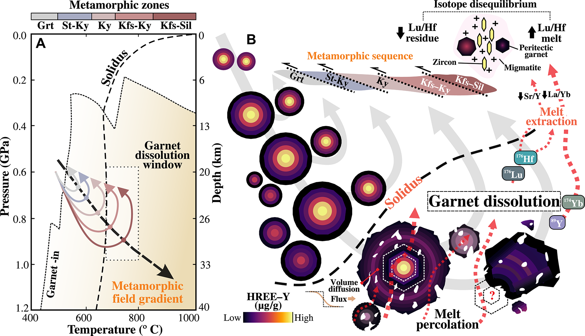

Melting the myth: Prograde garnet dissolves during early crustal melting

Resumo em Português
Amplamente considerada como uma fase que aumenta sua estabilidade e volume durante o metamorfismo progressivo e a fusão parcial, a granada suscita ainda a questão em aberto de se a granada subsolidus formada precocemente persiste ou se decompõe quando a fusão tem início. Neste trabalho, integramos tomografia de raios X 3D com mapeamento de alta resolução de elementos maiores e traço em granadas seccionadas centralmente ao longo de uma sequência metamórfica metapelítica, para rastrear sua resposta desde a transição subsolidus-suprasolidus até temperaturas de fusão de até ~770 °C.Contrariamente às previsões experimentais e de equilíbrio de fases, a granada sofre extensa dissolução no início da fusão parcial, perdendo mais de 40% de seu volume. A percolação do fundido cria redes de cavidades internas na granada, conectando o interior dos cristais à matriz reativa e encurtando marcadamente os caminhos de difusão intracristalina na interface fundido-cristal. Esse processo leva ao consumo da granada e resulta na redistribuição de elementos maiores e traço em temperaturas muito baixas para a difusão intracristalina em grãos maiores. Os resultados reconciliam a discrepância de longa data entre o crescimento progressivo de granada previsto acima do solidus e a escassez de inclusões de fundido nas bordas de granadas em migmatitos e granulitos. Com o início da fusão parcial, a granada subsolidus reage e torna-se um reservatório permeável de elementos de terras raras pesadas e ítrio (HREE-Y) na crosta residual.